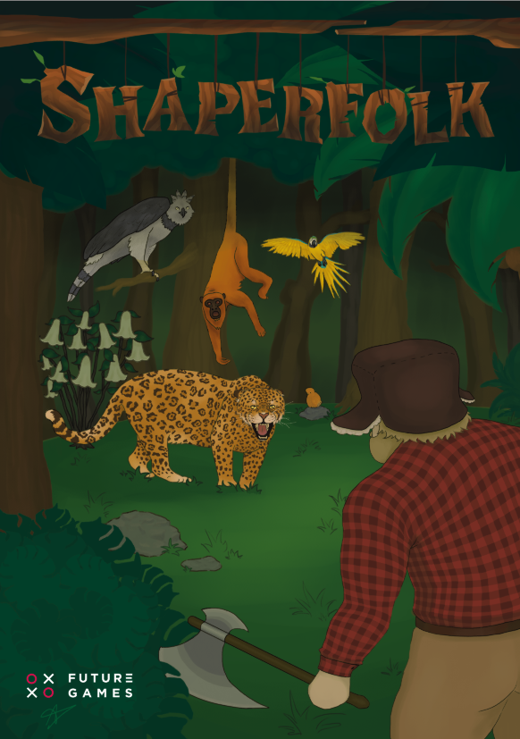

Shaperfolk is a tower defense game set in the Amazon Rainforest, where the great Ceiba tree Poe connects the flora and fauna of the forest. When the Lumberfolk invade the rainforest seeking magical powers from Poe's bark, players must defend the forest using a variety of towers and strategic combinations.

Developed as part of an 18-person multidisciplinary team, working closely with designers and other disciplines to iterate and polish the gameplay experience.
Displaying Variety of towers
Demonstarting Fusion between towers
Final Tower Behaviour in game
towers shocase in gameplay